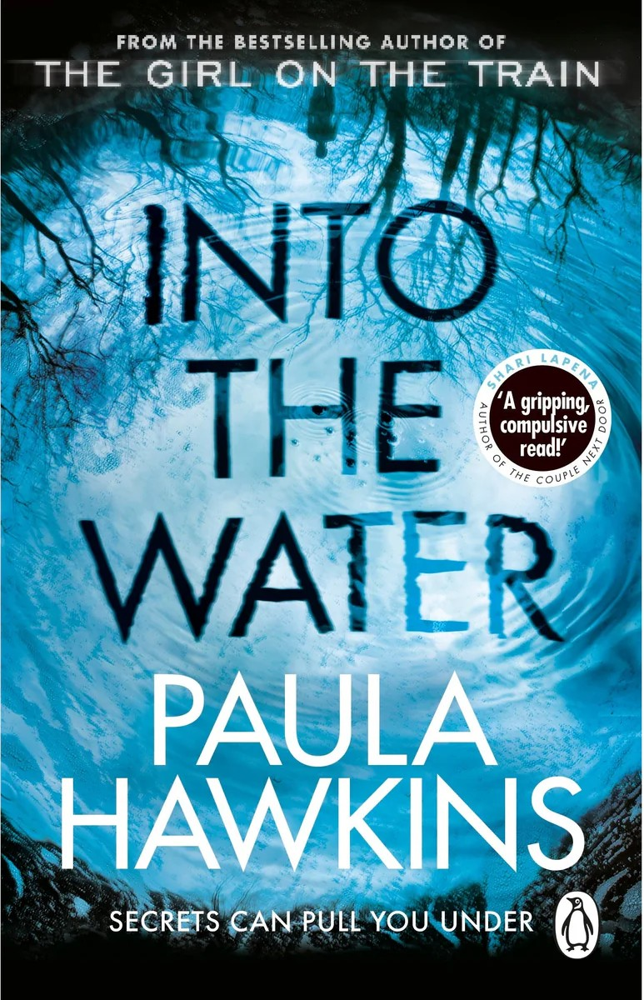

Into The Water
By Paula Hawkins
Into the Water by Paula Hawkins is a psychological thriller that explores the mysterious deaths of women in a small town's river. When Nel Abbott is found dead in the water, her sister Jules returns to uncover the truth, facing old memories and hidden secrets. As the story unfolds through multiple characters, the book dives into themes of memory, trauma, and how the past never really stays buried.